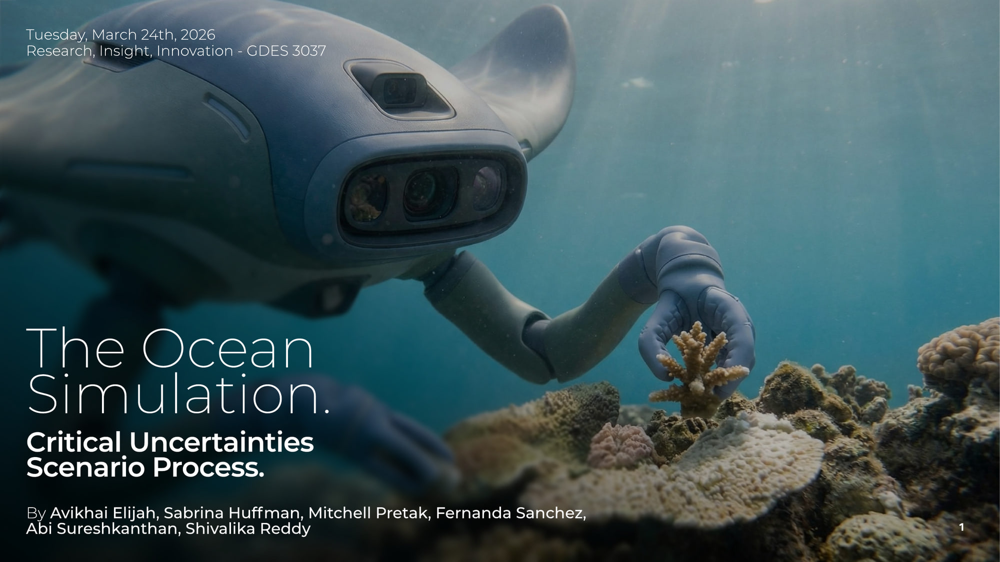
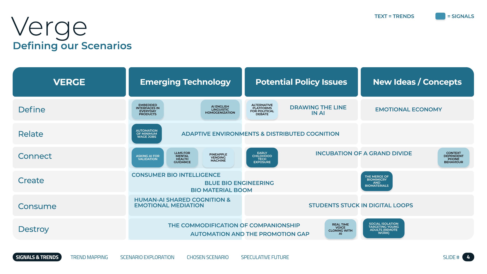
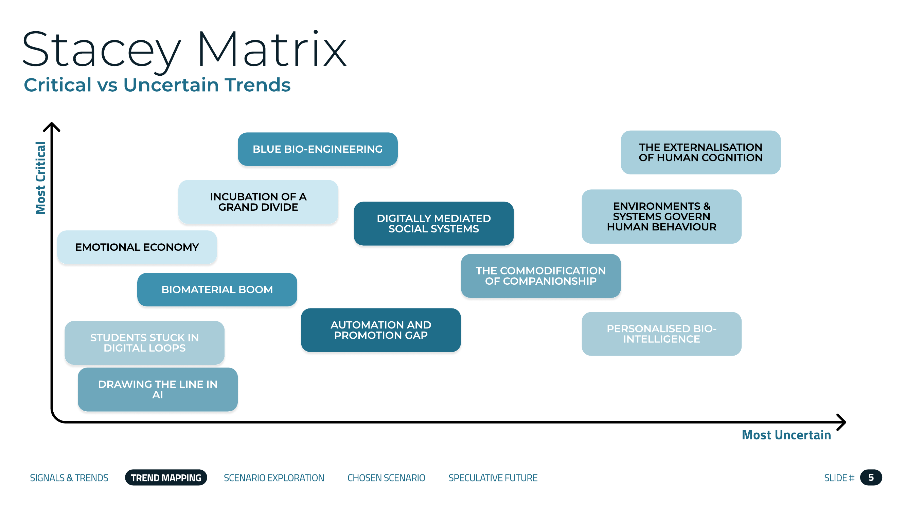
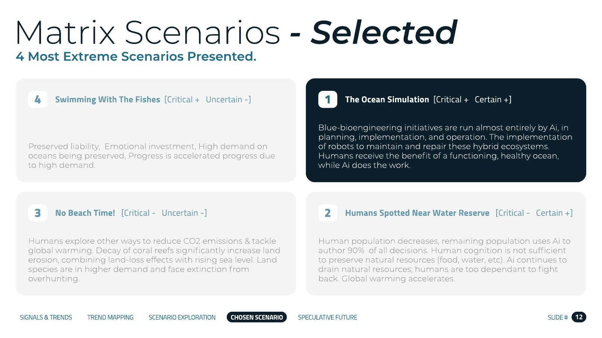
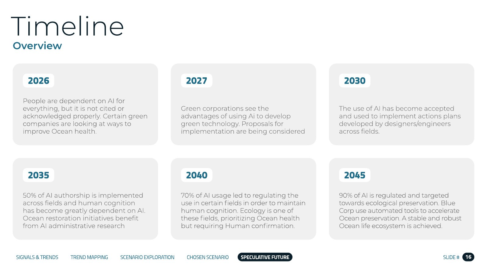
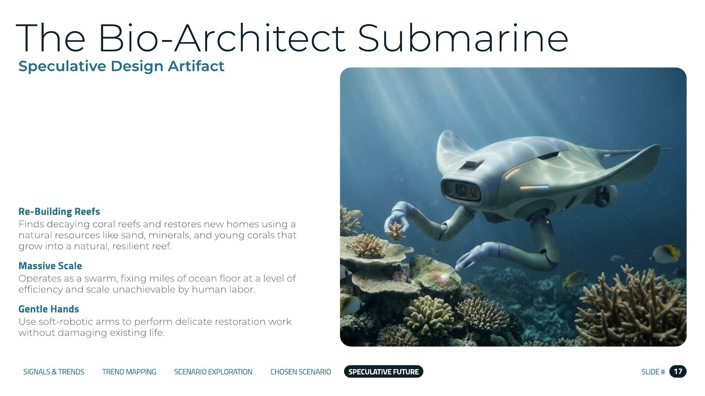
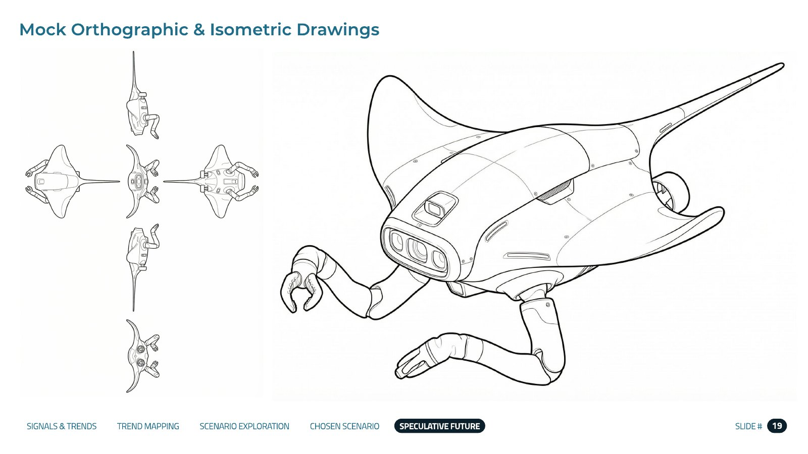
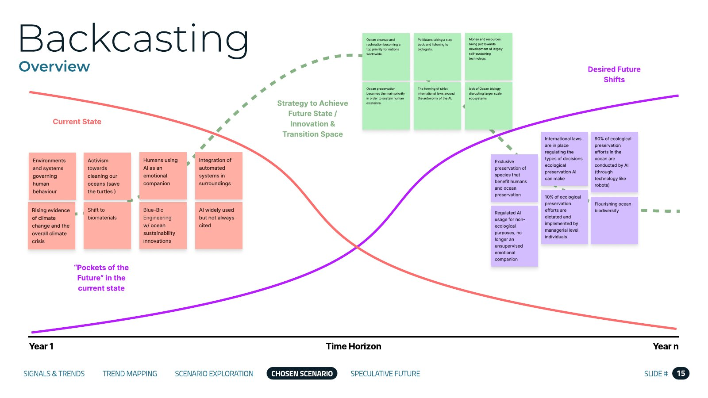
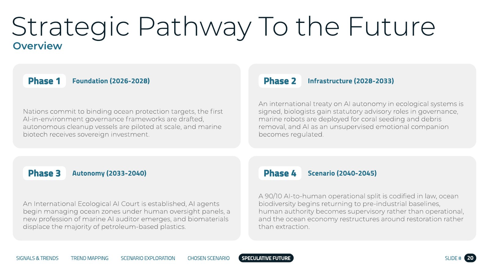

A foresight project that follows two trends to a 2045 scenario in which AI runs most ocean conservation, with a speculative artifact and a strategic pathway back to today.

Concept visualization of The Ocean Simulation, AI-generated, from the original project deck. All images in this deck are AI-generated.
The brief was a critical uncertainties scenario process: start from signals of change, map them into trends, and build a future worth planning for. We began with twelve trends and narrowed to the two that scored highest. Our most critical was "Blue Bio-Engineering," the shift from passive ocean conservation toward bio-engineered, technology-driven intervention. Our most uncertain was "The Externalization of Human Cognition and Emotion," where AI and digital systems increasingly take over human thinking and decision-making.

We mapped our trends and signals through the Verge framework to see how each one changes the way people define, relate, connect, create, consume and destroy. My work here was researching the selected trends, evaluating which trend and signal pairings held up, and following related news and developments.

A Stacey Matrix ranked every trend by how critical and how uncertain it was. I applied additional evaluation to assess how prominent our chosen trend was likely to be, which is what supported choosing Blue Bio-Engineering as the most critical.

Crossing the two trends produced four extreme scenarios. We selected The Ocean Simulation: blue bio-engineering run almost entirely by AI, in planning, implementation and operation, with humans receiving the benefit of a healthy ocean while AI does the work.
In this scenario, 90% of eco-conservation efforts have been taken over by AI. Heavy regulation is in place so that those efforts serve human life and environmental longevity, and humans keep ultimate authority over key decisions. The deck is also direct about the costs: engineered species with little diversity, privatized "Blue-Corp" organizations managing rehabilitation, and a luxury market for "natural fish."



We backcast from 2045 to the present to work out what would have to happen first, then set it out in four phases: Foundation (2026 to 2028), Infrastructure (2028 to 2033), Autonomy (2033 to 2040) and Scenario (2040 to 2045).


This is scenario work, not a product: its output is a reasoned future, an artifact that makes that future concrete, and a pathway a client could plan against.
My specific contributions: I researched and gathered information on the selected trends, evaluated and compared trend and signal pairings, researched related news and developments, and applied additional evaluation to assess how prominent the chosen trend was likely to be.
AI disclosure, from the deck's own attribution slide: all images in this project were generated with Google's generative AI tools (Gemini, Google Flow and Google Whisk), with some prompts refined in ChatGPT. No source photographs or manually illustrated base images were used.